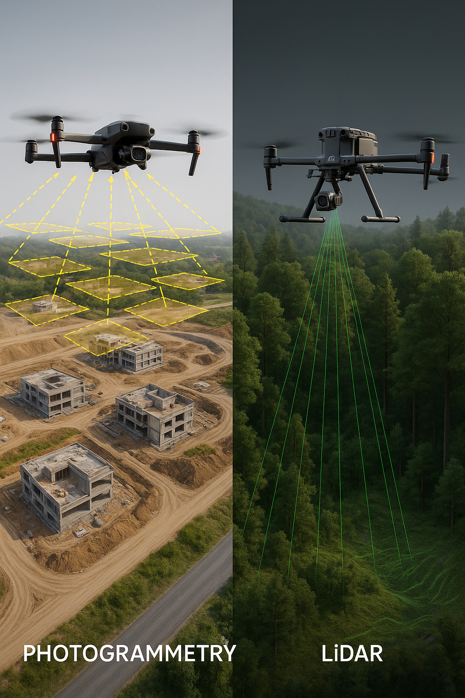

Drone mapping has rapidly become a core tool across construction, surveying, agriculture, mining, and infrastructure inspection. Two technologies dominate professional aerial mapping workflows today: photogrammetry and LiDAR.
While both methods generate accurate 3D models and maps, they operate very differently and serve different business needs. Understanding these differences is critical when choosing equipment, software, and services.
Photogrammetry creates maps and 3D models by analyzing hundreds or thousands of overlapping aerial photographs. Specialized software identifies common points between images and reconstructs the scene in three dimensions.
This method is popular because it is cost-effective and works with standard RGB cameras found on many DJI drones. For large open areas with good lighting, photogrammetry delivers impressive accuracy.
LiDAR (Light Detection and Ranging) uses laser pulses instead of photographs. A LiDAR sensor emits thousands of laser points per second and measures how long it takes for them to return after hitting the ground or objects.
This allows LiDAR to capture terrain data even through vegetation, making it extremely valuable in forestry, powerline inspection, and complex terrain mapping.
Both technologies can achieve survey-grade accuracy when properly planned. However, LiDAR generally performs better in environments where visual data alone is insufficient.
Photogrammetry relies heavily on lighting conditions and surface visibility, while LiDAR operates independently of light and can capture ground data under trees or complex structures.
Photogrammetry systems are more affordable and easier to deploy, making them ideal for small businesses and entry-level mapping operations.
LiDAR systems require higher upfront investment, specialized processing software, and advanced expertise. However, for professionals who need consistent accuracy in challenging environments, the investment pays off.
DJI supports both photogrammetry and LiDAR workflows through compatible aircraft and payloads. Drones like the DJI Mavic and Air series are widely used for photogrammetry, while enterprise platforms support LiDAR payloads for advanced mapping tasks.
Choosing the right DJI solution depends on your industry, terrain, budget, and long-term business goals.
If your work involves open sites, visual mapping, or budget-friendly solutions, photogrammetry is often the best starting point. If you require terrain penetration, consistent accuracy, and professional-grade data, LiDAR is the superior option.
Many professionals eventually use both technologies to cover a wider range of client needs.
This article is based on general industry knowledge and publicly available information from:
This content is original, independently written, and not copied from any single source.